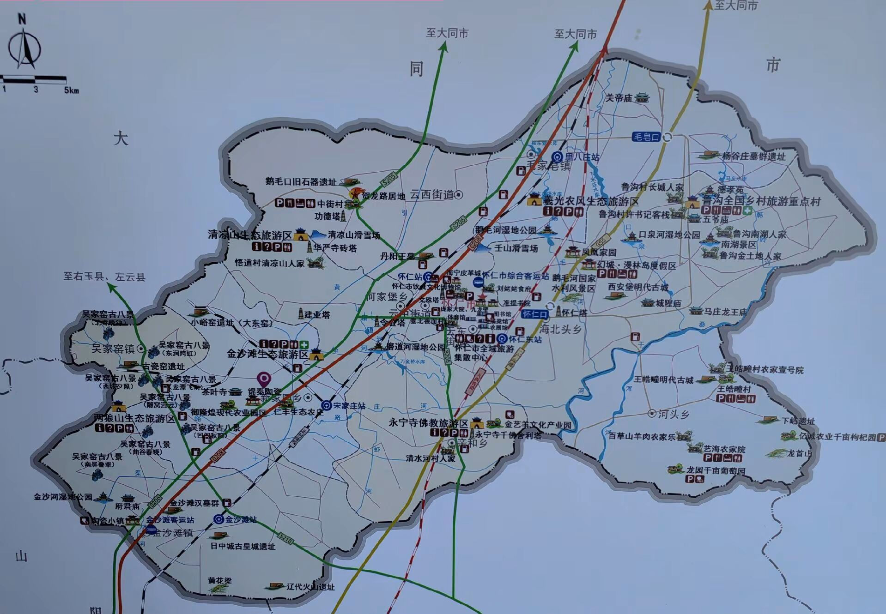

历史沿革
春秋战国时为代地。秦置班区县，属代郡。西汉置班氏县，新莽改为班副县，东汉复为班区县，东汉末年县废。
北魏时为畿内之地，隋属马邑郡云内县，唐为云中县地，五代因之。
辽代始置怀仁县。因耶律阿保机与李克用会于云州东城，易袍马约为兄弟，有“怀想仁人”之语，又与《论语》“怀德仁里”语符之，故取名怀仁，属西京道大同府。金贞祐二年（1214）五月升为云州，属西京路大同府。明清均为怀仁县，属大同府。
抗日战争和解放战争期间，中国共产党先后建立分属晋察冀、晋绥边区管辖的东、西怀仁县民主政府。1948年5月26日，怀仁全境解放，属晋绥边区专署。新中国成立后，属察哈尔省雁北专署，1952年12月归山西省雁北专区。
1954年7月，大同县、怀仁县合并为大仁县；1958年9月，大仁县撤销，划归大同市，称大同市郊区；1960年1月，置怀仁区，归大同市管辖；1964年12月，恢复怀仁县建制，归雁北地区管辖。
1993年7月10日，划归朔州市管辖。2018年2月，经国务院批准，撤销怀仁县，设立县级怀仁市，以原怀仁县的行政区域为怀仁市的行政区域。怀仁市由山西省直辖，朔州市代管。
-
春秋战国 · 秦
代地 · 班区县
春秋战国时为代地，秦置班区县，属代郡。
-
两汉 · 新莽
班氏县 · 班副县
西汉置班氏县，新莽改为班副县，东汉复为班区县，东汉末年县废。
-
北魏 · 隋唐
畿内之地 · 云中县地
北魏时为畿内之地，隋属马邑郡云内县，唐为云中县地，五代因之。
-
1044 · 辽
始置怀仁县
耶律阿保机与李克用会于云州东城，易袍马约为兄弟，有“怀想仁人”之语，又与《论语》“怀德仁里”语符之，故取名怀仁，属西京道大同府。
-
1214 · 金
升为云州
金贞祐二年五月升为云州，属西京路大同府。
-
明清
怀仁县 · 属大同府
明清均为怀仁县，属大同府。
-
抗战 · 解放战争
东、西怀仁县民主政府
中国共产党先后建立分属晋察冀、晋绥边区管辖的东、西怀仁县民主政府。1948年5月26日，怀仁全境解放，属晋绥边区专署。
-
1949 · 1952
察哈尔省 → 山西省
新中国成立后，属察哈尔省雁北专署，1952年12月归山西省雁北专区。
-
1954 · 1964
大仁县 · 怀仁区 · 复置怀仁县
1954年大同县、怀仁县合并为大仁县；1958年大仁县撤销，划归大同市，称大同市郊区；1960年置怀仁区，归大同市管辖；1964年恢复怀仁县建制，归雁北地区管辖。
-
1993 · 2018
划归朔州 · 撤县设市
1993年7月10日划归朔州市管辖。2018年8月，经国务院批准撤销怀仁县，设立县级怀仁市，由山西省直辖，朔州市代管。
民俗文化
怀仁旺火 · 拢火龙
春节、元宵期间流行于怀仁的社火民俗活动。清代《大同府志》记载：“元旦，家家凿炭伐薪垒垒高起，状若小浮图。”2011年列入第三批国家级非物质文化遗产名录。
踢鼓秧歌
怀仁传统民间舞蹈，以铿锵鼓点与剽悍舞姿演绎边塞风情，传承数百年不衰。
耍孩儿与道情
怀仁地方戏曲形式，唱腔高亢质朴，是晋北戏台上的乡土记忆。
怀仁方言
怀仁方言属晋语方言区的大包片，语调柔和、语速缓慢、词汇丰富、质朴敦厚，且保留了大量的上古词汇，堪称古汉语的“活化石”。外地人到怀仁，常被“圪蹴”“圪溜”“责楞”“逼兜”等土语弄得一头雾水，而这些看似古怪的说法，恰恰准确记录了古人的语音与语义。
山西方言区别于官话的最大特点在于保留入声，怀仁话同样入声分明，读来短促有力；又以“圪”为前缀的圪头词俯拾皆是，生动而富于乡土气息。
语音特色 · 古音今存
| 古无轻唇音 | “附”读“巴”、“逢”读“碰”、“缚”读“绑”，孵小鸡说“抱窝” |
|---|---|
| 古无舌上音 | “数落”说“得琅”、“坠”读“跌”、“澄”读“登”音、“踹”读“跺” |
| 尖团合流 | “揎”有读“hang”者，“憨水”即“涎”之古音，角落说“仡佬” |
| 分音词 | 角落“仡佬”、拳头“圪嘟”、圆圈“胡阑”，皆是单字复音之古语 |
圪蹴 · 圪溜 · 圪嗒
“圪”头词是晋语最具特色的一类词汇。圪蹴即蹲下，圪溜是走走逛逛，圪嗒为絮叨闲聊，圪楚指皱纹。一词前冠一“圪”，音节柔和，乡土气十足。
褒弹 · 款款 · 梦雨
褒弹为指摘挖苦，元曲中已见；款款是小心缓慢之意，杜甫诗有“点水蜻蜓款款飞”；梦雨指绵绵细雨，李商隐“一春梦雨常飘瓦”即此义。
纳克勒 · 行达 · 箍住
“纳克勒”即“哪去了”，“去”字古音读“克”；“行达”是相度、估量观察，本是宋代公文用语；“箍住”即逼迫，其本字为“訄”，《说文》释为“迫也”。
霍闪 · 梦生雨 · 黑麻麻
霍闪指闪电，本字“矆睒”，唐顾云“金蛇飞状霍闪过”可为注脚；天阴晦暗，怀仁话说“黑乌乌的”即“黑麻麻的”，“乌”字古音读若麻。
瞎鳖丁 · 佻达
怀仁人称不识字的人为“瞎鳖丁”，疑为“白丁”之俗讹；谓人举止轻佻曰“佻达”，唐罗邺《蒋子文传》已有“佻达无度”之语。
地方美食
一方水土一方味。塞北的羊肉、土豆与时令山野，在怀仁人的灶台上一番调和，便成了舌尖上的乡愁。以下数味，皆是怀仁最具代表性的地方名吃。
糖干炉 · 闪塌嘴
相传源于宋辽时期，原为面点师为官家传递情报特制的“邮寄载体”，因其干脆香酥而风行。光绪二十六年慈禧西逃路经怀仁，品尝后赞不绝口，因外实内空、险些“闪塌嘴”而得此俗名。
怀仁羊杂
相传始于北宋，杨家将金沙滩鏖战时粮草断绝，杨排风率火头军以羊下水洗净烩制，配山药粉条而创。如今怀仁羊杂已成品牌小吃，红油辣汤配本地土豆粉，鲜香醇厚，闻名雁北。
怀仁大肉丸
怀仁盛产土豆，以粉面打芡，放凉后擦成沫，加调料与肉沫捏形成型，上笼蒸熟，佐汤油、葱花而食。口感筋道，是怀仁人记忆深处的家常至味。
炒兔头
将卤至半熟的兔头对半剖开，以辣椒油爆炒，佐以辣椒面、花椒、孜然、油炸花生等香料，香辣醇厚，是怀仁夜宵摊上最勾人的一味。
怀仁凉粉
以本地土豆淀粉制成，又白又细、晶莹剔透。在怀仁不叫“吃”凉粉，而叫“喝”凉粉——碗边轻轻一吸溜，如水般的滑嫩便滑入腹中，沁人心脾。
盐煎羊肉 · 羔羊肉
金沙滩地处塞外，羊肉肉质细腻鲜嫩。相传宋辽交战时军中缺调料，杨排风以盐、花椒煎制羊肉，味道纯正鲜美，“盐煎羊肉”由此流传民间。怀仁羔羊肉已获国家地理标志证明商标。
文化遗产
怀仁文化底蕴深厚，既有列入国家名录的非物质文化遗产，也有“中国民间文化艺术之乡”的金字招牌。
| 国家级非遗 | 春节（怀仁旺火习俗） |
|---|---|
| 省级非遗 | 怀仁刻瓷艺术 |
| 荣誉称号 | 被文化和旅游部命名为“中国民间文化艺术之乡” |
名胜古迹
鹅毛口古石器遗址
全国史前时期三大石器制造场之一，新石器时期人类文明重要发源地，见证人类走向文明的关键一步。
金沙滩古战场
宋辽古战场，杨家将浴血金沙滩的故事千古传诵，家喻户晓。
清凉山辽代砖塔
怀仁七塔之一，辽代古建遗珍，静立于清凉山上。
西安堡
始建于明朝天顺八年（1464年），明长城防御体系的重要城堡。
吴家窑古瓷窑遗址
见证了怀仁千年陶瓷历史，今人仍能在此触摸千年窑火的温度。
旅游景点
磨道河湿地公园 · 令公塔
依托河道、滩涂、堤坝而建，有令公湖、天波湖、忠义湖等十个水面，水面与湿地面积达8850亩。令公塔仿木构砖塔通高36米，为纪念北宋名将杨继业而建。
口泉河国家湿地公园
国家级湿地公园（试点），总面积626.80公顷，芦苇婆娑、水鸟翔集，是怀仁近郊亲近自然、观鸟赏景的好去处。
鲁沟旅游村
以德孝苑等生态景观闻名，2014年被授予“山西省最美旅游村”，村居整洁、景致雅致，是体验晋北乡村风情的样板村。
金沙滩生态旅游区
位于县城南30公里黄花梁脚下，昔日宋辽古战场今已绿装披覆，防风林带与经济林纵横交错，是凭吊古战场、亲近自然的好去处。
清凉山 · 清凉寺
相传为文殊菩萨赴五台山途中的第一道场，有“先有清凉寺，后有五台山”之说。山势陡峭，古塔、石窟与佛雕皆建于辽金时代。
两狼山生态旅游区
位于县城西南30公里洪涛山脉，山青水秀，地势险要，为内外长城之间的重要关隘，自古兵家必争之地。
怀仁市展览馆
总布展面积6010平方米，以“印象怀仁、古韵怀仁、现代怀仁、共享怀仁”四个篇章，通过大旺火民俗体验、《血战金沙滩》时空复原影像与《乐游怀仁》VR单车，一览怀仁古今。
怀仁市陶瓷科技艺术创新中心
怀仁市陶瓷科技艺术创新中心以"彰显陶瓷创新实力、传承陶瓷文化根脉、赋能陶瓷产业升级"为核心，与陶瓷商业文化街联动，打造集产品设计、展示、旅游、体验、购物等一体的时尚"街、廊、馆、店、场"，推动传统产业向高端化、多元化、数字化迈进，让"陶瓷+"成为生机勃勃的产业。
